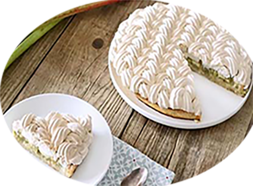

Tarte à la rhubarbe meringuée

Pour 1 tarte
Préparation : 20 mn
Cuisson : 30 mn
Ingrédients
- 1 disque de pâte brisée sucrée
- 1 kg de rhubarbe
- 3 jaunes d'oeufs
- 20 cl de crème
- 1 sachet de sucre vanillé
- 1 CS de maïzena
- 150 g de sucre
Pour la meringue :
- 3 blancs d'oeufs
- 180 g de sucre semoule (ou 90g de sucre semoule et 90g de sucre glace)
Recette
- Laver et éplucher les tiges de rhubarbe. Les couper en petits tronçons et les mettre dans un récipient avec 50 g de sucre.
- Laisser macérer 30 minutes à 1 heure puis égoutter.
- Préchauffer le four à 180°C (th.6). Abaisser la pâte et la foncer dans votre cercle ou moule à tarte.
- Disposer les morceaux de rhubarbe dans le fond et enfourner durant 10 minutes.
- Dans un récipient, mélanger les jaunes d'oeufs avec les 100 g de sucre restant, le sucre vanillé, la maïzena et la crème.
- Verser l'appareil sur le fond de tarte et enfourner à nouveau durant 20 minutes.
- Préparer la meringue : pour cela, battre les blancs en neige et incorporer progressivement le sucre.
- Lorsque la tarte est cuite, dresser la meringue sur la tarte à l'aide d'une poche à douille.
- Si vous souhaitez obtenir une meringue croquante et fondante à coeur, enfourner la tarte durant 40 minutes à 1h à 100°C (th.3-4).
- Sinon, faites la simplement colorer au four ou au chalumeau.
Note
Ne pas faire l’impasse sur la macération de la rhubarbe :
Cela change vraiment tout et ça évitera que le fond de tarte ne cuise pas à cause de l’excès d’eau de la rhubarbe (ou qu’il ne se détrempe).
Vous pouvez également réaliser cette tarte sans meringue si vous le souhaitez.
Astuce : Saupoudrez le fond de tarte de poudre d’amande (ou de chapelure). Ça viendra absorber l’excédent de jus si besoin…
 Et pourquoi pas une meringue italienne
Et pourquoi pas une meringue italienne
|